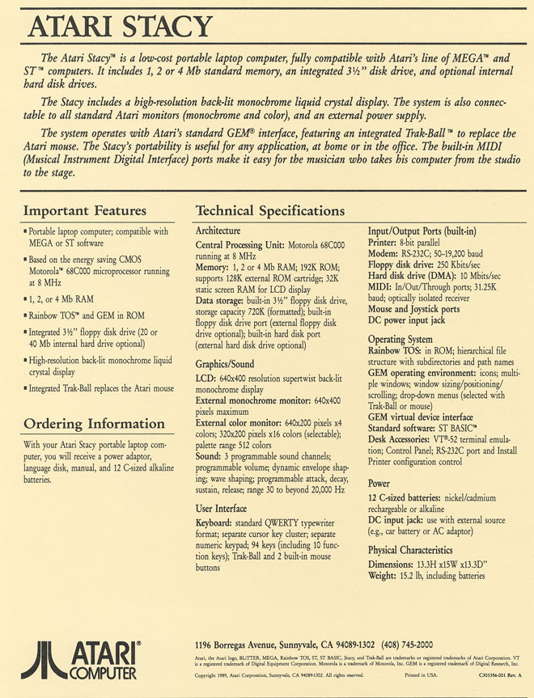

Atari's first portable version of the Atari ST line of computers, the STacy
gave Atari users the freedom to carry (ok, lug...) their work with them.
Although monsterous by todays 2.6lb to 5lb average laptop weight, the STacy
was loaded with a lot of features. One important feature was
its built-in MIDI ports. The STacy became the musicians choice
of computers because of its size and features.
